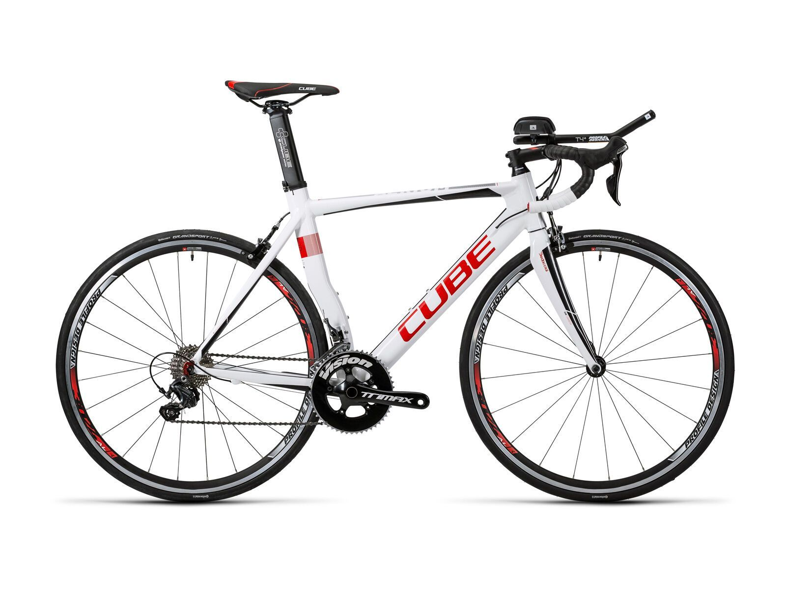

Saison 2025
Zahlen & Fakten
2.500+
km / Jahr
35+
Pässe
28.000
Höhenmeter
Strava
Mein Strava-Profil
Aktuelle Aktivitäten und Routen direkt von Strava.

Lieblingsstrecke
Alpenüberquerung
Mehrtägige Tour über die Alpenpässe – vom Bodensee bis zum Gardasee. Die ultimative Herausforderung auf dem Rennrad.
Equipment
Mein Bike

Gear
Ausstattung
- Cube Aerium HPA Pro, white´n´red
- Garmin Edge 1040
- Herzfrequenz-Gurt Wahoo